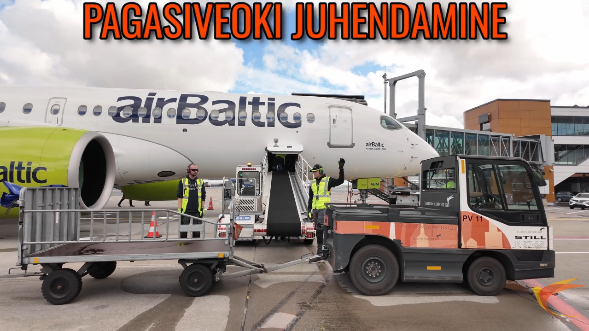

Audiovisual Producer & Video Editor
Translating complex ideas into clean, dynamic media.
SHOWCASE

B2B Industrial Training Video
The scope: Translating complex and highly regulated aviation ground handling processes into a clear, visual onboarding tool.
The process: Coordinated a full-day shoot and a weeklong post-production workflow focused on clarity, pacing, and instructional design. Authored the script and integrated AI-generated voiceovers throughout.
Why it matters: Demonstrates my ability to handle corporate safety standards and deliver functional internal communication tools. (Full video available via private link upon request).
Podcast Show "Lahtimõtestaja"
The scope: End-to-end independent production of a 10-episode audio series.
The process: From scriptwriting and host duties to audio recording, editing, and final platform distribution.
Why it matters: Shows my capacity to manage long-term, multi-stage projects independently, ensuring consistent quality and technical audio precision.
Dynamic Sports & Fitness Content
The scope: High-energy, fast-paced video editing designed for modern social media platforms.
The process: Leveraging decades of gymnastics experience to translate complex, science-backed concepts into easily digestible content optimized for viewer retention.
Why it matters: Perfect for brands or agencies looking for editors who understand platform algorithms and dynamic pacing.
Travel Filmmaking
The scope: Cinematic environmental storytelling.
The process: Utilized a mobile 4K setup to capture high-quality footage without disrupting the environment. Developed the core concept, compartmentalized the narrative, audio, and shot list, and managed full execution.
Why it matters: Proves I can shoot independently on location, adapt to natural lighting, and turn raw environments into compelling narratives quickly.
SOLUTIONS
Video Editing & Color Grading
Professional post-production in DaVinci Resolve. From narrative structuring and proxy workflows to precise color grading.
Videography & Production
Swift shooting for dynamic environments. Equipped to handle on-site corporate shoots, training videos, advertisements and event coverage.
Social Media Content
Platform-optimized content creation and marketing. Fast-paced, engaging edits designed specifically for algorithms and audience retention.
Podcast & Audio Production
End-to-end podcast creation. From professional audio recording and multi-track mixing to final distribution formatting.
GEAR
A highly mobile, professional setup built for speed, quality, and adaptability.
Primary Camera: DJI Osmo Pocket 3
Compact cinematic powerhouse. Capable of shooting up to 4K 60fps with D-Log M color profiles, allowing for maximum dynamic range and precise color grading in post-production.
Post-Production: Apple MacBook Pro M4 Pro
High-performance mobile workstation. Ensures lightning-fast render times, seamless timeline scrubbing without proxies, and rapid project turnarounds on location.
Professional Audio: DJI Mic 2
Wireless, low-profile audio recording. Features 32-bit float internal recording to guarantee unclipped, crystal-clear dialogue and ambient sound in unpredictable environments.
B-Cam & Stills: Google Pixel 8
High-end computational photography and 4K B-roll capabilities. Perfect for capturing ultra-responsive social media assets, location scouting, and behind-the-scenes content.
CONNECT
Let's discuss your next project.
allan.olmaru@gmail.com
Phone
+372 5599 6886
Location
Tallinn, Estonia
Social Media
Behind the lens